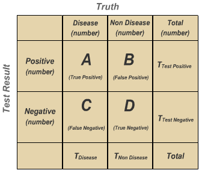

3.3 Conditional probabilities and model evaluation
1 Conditional probabilities
In medical research, one often deals with populations. Medical data from whole populations can give responses to questions such as:
- How often people have a given disease?
- How often people people with a given disease survive or die?
- Does the prevalence of a given disease change between men and women?
The technique to extract such responses is given by probability theory.
1.1 Total Numbers and Probabilities
Let’s start using the following data, where M represent males, and F females, L represents left-handed people and R represents right-handed people.
| ID | Male/Female | Left/Right Handed |
|---|---|---|
| 1 | M | L |
| 2 | F | R |
| 3 | M | R |
| 4 | F | R |
| 5 | F | L |
The first important statistic is the total number of data points, which correspond to the total number of people in this case. For this data set we have:
N = 5
This gets more interesting when we begin counting particular characteristics. For example, what is the number of females in the data set? For this, we count the rows which have an F and get:
N(F) = 3
Probabilites are derived from total numbers. The formula for the probability of a given characteristic is number with characteristic / total number. That is, for example above, we have the probability for a person being female in the data set as:
P(F) = \frac{N(F)}{N} = 3/5 = 0.6 = 60\%
Let’s repeat the calculation once more with left-handed people. The total number of left-handed people is: N(L) = 2 which can be found by counting lines in the table. Therefore, the probability of a person being left-handed in this data set is: P(L) = \frac{N(L)}{N} = 2/5 = 0.4 = 40\\%
1.2 Composite Probabilities
Probabilites don’t need to be limited to just one characteristic. We can also study composite characteristics, and all the reasoning will be exactly the same. For example, what is the probability of someone in the data set being both male and right-handed? First we count the rows with the right characteristics to find that:
N(M,R) = 1
which means that the corresponding probability is: P(M,R) = \frac{N(M,R)}{N} = 1/5 = 0.2 = 20\\% Let’s do this again with right-handed females. By counting rows we find that:
N(F,R) = 2
which means that: P(F,R) = \frac{N(F,R)}{N} = 2/5 = 0.4 = 40\\%
1.3 Conditional Probabilites
Sometimes we want to focus our study on a sub-population. For example, only females, or only right-handed people. For this case, conditional probabilities are useful. For example, we write:
P(F|R)
to represent the probability of being a female, given that one is right-handed. That is, the sub-population we are studiying appears after the | symbol in the formula. Conditional probabilities can be calculated as:
P(F|R) = \frac{P(F,R)}{P(R)}
which means we can calculate them using only regular and composite probabilites. Let’s calculate the probability of a right-handed person being female using the formula above:
P(F|R) = \frac{P(F,R)}{P(R)} = \frac{0.4}{0.6} = \frac{2}{3} = 0.66 = 66\%
As you can see, this is different from the probability of being a female in the total population, which was calculated as 60% above.
1.4 Exercises
For the exercise below, we are going to use the following data, where M represent males, and F females, Y represents young people and O represents old people, and H represents people with heart disease and N people with no heart disease.
| ID | Male/Female | Young/Old | Heart Disease/No Heart Disease |
|---|---|---|---|
| 1 | M | Y | N |
| 2 | M | O | H |
| 3 | F | O | N |
| 4 | M | Y | N |
| 5 | F | O | H |
| 6 | F | Y | N |
| 7 | F | Y | N |
| 8 | M | Y | H |
| 9 | F | O | N |
| 10 | M | O | N |
- What are the probabilities of being male and female in the data set?
- What are the probabilities of being young and old in the data set?
- What are the probabilities of having heart disease and not having heart disease in the data set?
- What is bigger: the probability of being a male with heart disease, or being a female with heart disease? Write down the probabilities.
- What is bigger: the probability of being an young person with heart disease or being an old person with heart disease? Write down the probabilites.
- What is the probability of an young person having heart disease?
- What is the probability of an old person having heart disease?
- What is the probability of a male having heart disease?
- What is the probability of a female having heart disease?
- What is bigger: the probability of an old person having heart disease, or the probability of a person with heart disease being old? Write down the probabilities.
2 Model evaluation
2.1 Conditional probabilities from data
Let’s look again at the data we used last time:
| Tumour Size | Quantity | Quantity with cancer | Proportion |
|---|---|---|---|
| 1 | N1 | Q1 | N1/Q1 |
For each tumour size, we collected:
- The quantity of cases with this given size
- The quantity of cases with this given size and cancer
- The proportion of the second in the first
If we divide these quantities by the total number of cases N:
| Tumour Size | Probability | Probability of cancer | Proportion |
|---|---|---|---|
| 1 | N1/N | Q1/N | N1/Q1 |
we get instead:
- The probability of having a case with this given size: P(\text{Size}=n)
- The probability of having a case with this given size and cancer: P(\text{Size}=n,\text{Cancer})
- The proportion of the second in the first
This last quantity has a name: a conditional probability. It is written as:
P(\text{Cancer} \mid \text{Size} = n) = \frac{P(\text{Size}=n, \text{Cancer})}{P(\text{Size}=n)}
and pronounced as: the probability of having cancer given that the size is n.
In general, we write it as P(A∣B) and there is a relation:
P(A∣B)P(B) = P(A,B) = P(B∣A)P(A)
which is called Bayes’ rule.
2.2 Evaluating models
In the first lesson, we created a diagnostic model – from tumour size, it gave a diagnostic: cancer or not cancer. The concept of conditional probability can be used to evaluate the quality of the model.
The two variables we have are:
- Whether the patient has cancer or not
- The result of our model
In the previous course we learned about how to classify these results:

From these variables, we can define four important quantities (also called operational characteristics): sensity, specificity, positive and negative predictive values for this particular model:
The first one is sensitivity, which tests which proportion of sick people was correctly identified:
\text{Sensitivity} = P(\text{Positive} \mid \text{Sick}) = \frac{\text{Positive test and sick}}{\text{Total sick}} = \frac{A}{A+C}
The second one is specificity, which tests which proportion of healthy people was correctly identified:
\text{Specificity} = P(\text{Negative} \mid \text{Healthy}) = \frac{\text{Negative test and healthy}}{\text{Total healthy}} = \frac{D}{B+D}
The third one is positive predictive value, or PPV, which tests which proportion of positive tests was actually correct:
\text{PPV} = P(\text{Sick} \mid \text{Positive}) = \frac{\text{Positive test and sick}}{\text{Positive test}} = \frac{A}{A+B}
The fourth one is negative predictive value, or NPV, which tests which proportion of negative tests was actually correct:
\text{NPV} = P(\text{Healthy} \mid \text{Negative}) = \frac{\text{Negative test and healthy}}{\text{Negative test}} = \frac{D}{C+D}
2.3 Practice
We are going to use data from benign and malignant tumours, available here.
3 Control
You will reproduce the analysis by filling the following control exercise. The description of the exercise can be found in English and Russian.